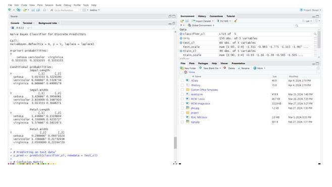

To classify the new instance (new sample) to a target data using Naïve Bayes classification algorithm in R Studio.
o Install the necessary package in R Studio such as “e1071”
o Set the current working directory
o Save the dataset in the current working directory
oRead the dataset in the form of csv file using read.csv().
oFinally predict the category for the new instance using Naïve Bayes classifier.
# Loading package
library(e1071)
library(caTools)
library(caret)
# Splitting data into
train # and test data
split <- sample.split(iris, SplitRatio = 0.7)
train_cl <- subset(iris, split == "TRUE")
test_cl <- subset(iris, split == "FALSE")
# Feature Scaling
train_scale <- scale(train_cl[, 1:4])
test_scale <- scale(test_cl[, 1:4])
# to training dataset
set.seed(120)
# Setting Seed
classifier_cl <- naiveBayes(Species ~ ., data = train_cl) classifier_cl
# Predicting on test data'
y_pred <- predict(classifier_cl, newdata = test_cl)
# Confusion Matrix
cm <- table(test_cl$Species, y_pred) cm
# Model Evaluation
confusionMatrix(cm)
